Plan wycieczki
Zwiedzone miejsca
- Bergamo
- Diga del Vajont
- Riva del Garda
- Trydent
- Lake Misurina
- Sentiero del Dint
- Triest
- Werona
- Sirmione
- Parma
- Lavagna
- Genua
- Sacra di San Michele
- Turyn
- Mediolan
Czas wycieczki: 8 dni
Skład osobowy: 3 dorosłych, 2 dzieciaki
Przejechane kilometry: około 1800
Punkt początkowy i końcowy: Kraków
Plan wycieczki był trochę inny, ale nie wzięliśmy pod uwagę kilku rzeczy, przez co uległ zmianie - szczegóły zobaczycie w opisie poszczególnych dni. Zaplanowaliśmy wyjazd jako trochę luźniejszy z uwagi na fakt, że to pierwsza większa wycieczka naszej młodszej córki, ale w sumie wyszło aktywnie jak zwykle. 😊
Plan wycieczki
Szczegóły planu
Dzień pierwszy
- 9:00 - Bergamo, zwiedzanie do 13:00
- 15:00 - Riva del Garda do 16:00
- 17:00 - Trydent, zwiedzanie i nocleg
Dzień drugi
- 9:00 - wyjazd
- 12:00 - Lake Misurina + Dolomity do 18:00
- 20:00 - nocleg w Laghi
Dzień trzeci
- 8:00 - wyjazd
- 10:00 - przyjazd do Triestu, zwiedzanie do 15:00
- 18:00 - przyjazd do Werony, zwiedzanie i nocleg
Dzień czwarty
- 9:00 - wyjazd
- 10:00 - Sirmione do 14:00
- 16:00 - przyjazd do Parmy, zwiedzanie i nocleg
Dzień piąty
- 9:00 - wyjazd
- 11:00 - Lavagna, plażing do 14:00
- 15:00 - Genua, zwiedzanie i nocleg
Dzień szósty
- 9:00 - wyjazd
- 11:30 - Sacra di San Michele, zwiedzanie do 13:30
- 14:30 - Turyn, zwiedzanie i nocleg
Dzień siódmy
- 9:00 - wyjazd
- 11:00 - Mediolan, zwiedzanie do wieczora i nocleg
Dzień ósmy
- 10:00 - wyjazd na lotnisko
Plan wycieczki
Trasa
Zwiedzanie
BERGAMO
Do Bergamo dolecieliśmy w środku nocy a ramo po odebraniu samochodu wybraliśmy się do Citta Alta. Zdecydowaliśmy, że zobaczymy tylko tą położoną na wzgórzu, starą część miasta. Idąc wzdłuż murów minęliśmy Viale delle Mura i skręciliśmy w głąb miasteczka. Wśród starych murów, pomimo wysokiej temperatury, panował przyjemny chłód. Odwiedziliśmy Piazza Duomo i Piazza Vecchia, wokół których skupione są najważniejsze budynki Citta Alta. Można tam też znaleźć kalendarz słoneczny. Na koniec, klucząc uliczkami, wróciliśmy do samochodu.
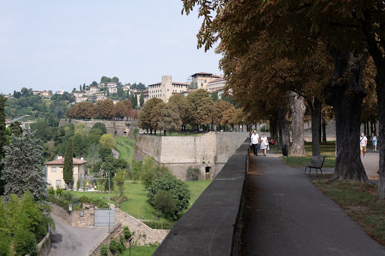
Zwiedzanie
DIGA DEL VAJONT I RIVA DEL GARDA
W drodze do Riva del Garda naszą uwagę przykuła duża, nieczynna zapora wodna. Okazało się, że trafiliśmy na miejsce katastrofy z 9 października 1963 roku. Do zbiornika obsunęła się ziemia, co spowodowało powstanie dwóch fal powodziowych, które zniszczyły kilka położonych poniżej miasteczek i zabiły prawie 2 tysiące osób. Wzdłuż drogi prowadzącej z parkingu na zaporę można zobaczyć zawieszone kawałki materiałów, na których wypisane są imiona oraz wiek dzieci, które zginęły podczas tej katastrofy. Niedługo potem dotarliśmy do Riva del Garda, miasteczka położonego nad największym i najczystszym jeziorem Włoch. Już sama droga wzdłuż brzegu sprawia przyjemność, a może po prostu górskie jeziora wyjątkowo mi się podobają 🖤. Na miejscu przeszliśmy obok zbudowanej na sztucznej wyspie twierdzy z XII wieku: Rocca di Riva, żeby potem po prostu nacieszyć się widokami i piękną pogodą przed dalszą drogą.
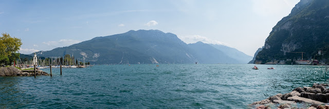
Zwiedzanie
TRYDENT
Miasto przywitało nas zakorkowaną autostradą i lekkim deszczem, ale zanim zdążyliśmy się rozpakować w mieszkaniu, po jednym i drugim nie było ani śladu. W związku z tym wybraliśmy się na spacer po starym mieście i zobaczyliśmy najbardziej charakterystyczne dla miasta miejsca, takie jak zamek Buonconsiglio, Piazza Duomo, kilka kościołów i skończyliśmy przy pomniku Dantego. Nocowaliśmy w Albiano, miasteczku położonym dość wysoko, kilka kilometrów od Trydentu, i poranek powitał nas przepięknym widokiem na góry.
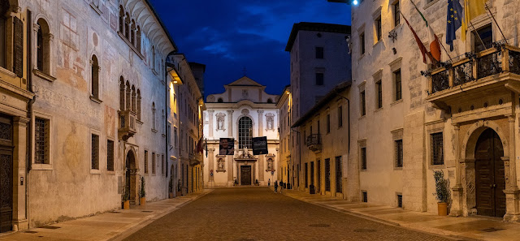
Zwiedzanie
DOLOMITY I SENTIERO DEL DINT
Początkowy plan na Dolomity zakładał, że zobaczymy Lago di Braies i przejdziemy się szlakiem dookoła Tre Cime di Lavaredo. Niestety nie doczytaliśmy, że w weekend a do tego w wakacje drogi są zamykane o 9 rano. Na miejscu byliśmy około 11, więc pojechaliśmy zobaczyć inne jezioro: Lago di Misurina, największe naturalne jezioro w Cadore. Po za piękną lokalizacją, miejsce to szczególnie służy osobom cierpiącym na choroby dróg oddechowych. Wybraliśmy szlak prowadzący dookoła jeziora a potem, jadąc niekończącymi się serpentynami, ruszyliśmy w kierunki Sentiero del Dint. Jest tam krótki szlak, na trasie którego można znaleźć 3 punkty widokowe, w tym częściowo przeszkoly taras, w którego rozciąga się wspaniały widok na Diga di Barcis. Miłą niespodzianką na koniec dnia okazała się lokalizacja kolejnego noclegu - był ukryty wśród rozległych winnic.
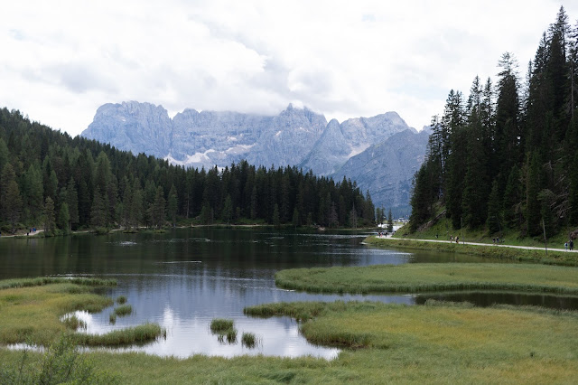
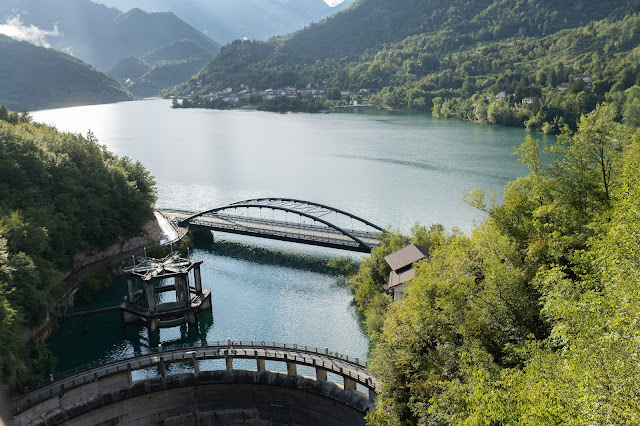
Zwiedzanie
TRIEST
Miasto już z daleka zachęca widokiem morza. Zaparkowaliśmy na płatnym parkingu blisko centrum i ruszyliśmy wzdłuż wybrzeża. Pierwszym punktem było molo z obowiązkowym moczeniem nóg w morzu, następnie skręciliśmy na Piazza Unità d'Italia (widać na nim wyraźnie, że miasto przechodziło z rąk do rąk i nie wygląda jak typowe, włoskie miasteczko). Następnie, szukając w międzyczasie otwartej pomimo sjesty restauracji, zajrzeliśmy do Piazza della Borsa, Roman Theatre of Trieste oraz Parish of Santa Maria Maggiore i mijając Arco di Riccardo dotarliśmy na zamkowe wzgórze: Castello di San Giusto. Wracając wąskimi uliczkami zatrzymaliśmy się jeszcze przy Canal Grande po czym wróciliśmy do samochodu.
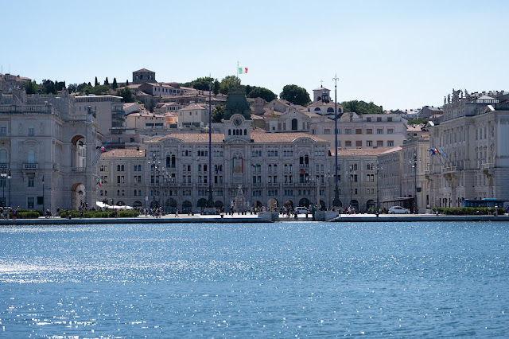
Zwiedzanie
WERONA
Miasto, które zrobiło na mnie największe wrażenie. Zwiedziliśmy kolejno Castelvecchio wraz z mostem Scaligerów, Amfiteatr i główną ulicą poszliśmy w kierunku balkonu Julii. Dotarliśmy tam dość późno i wejście było już zamknięte, ale to nic straconego. Reszta miasta zrekompensowała to z nawiązką. Wczytując się w przewodnik krążyliśmy jeszcze po Piazza dei Signori i Piazza Erbe oraz okolicy a w drodze powrotnej zobaczyliśmy również Łuk Gawiuszów. O tej godzinie po mieście krążyły tłumy turystów, ale rano o wschodzie słońca, kiedy wybraliśmy się, żeby zrobić sesję zdjęciową, powitała nas cisza i wyludnione ulice. Wtedy miasto wygląda jeszcze piękniej 🖤.
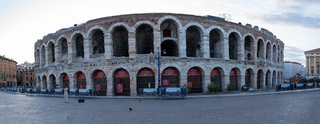
Zwiedzanie
SIRMIONE
Czyli powrót nad jezioro Garda. Na małym cyplu kryje się średniowieczne miasteczko z okazałym zamkiem. Promenadą nad brzegiem jeziora przeszliśmy na szczyt cypla (zbierając po drodze muszelki, których jest tu bardzo dużo). Tam spędziliśmy chwilę na kąpieli w jeziorze i odpoczynek w gaju oliwnym. Potem wróciliśmy, mijając po drodze willę Marii Callas, stare i klimatyczne uliczki oraz budynki skąpane w kwiatach. Kiedy wracaliśmy na parking mijały nas tłumy turystów a drogi zaczynały być zamykane - dlatego dobrze wybrać się tam z samego rana.
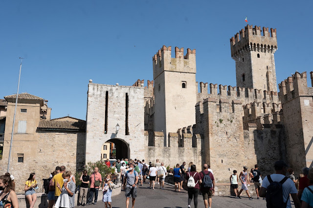
Zwiedzanie
PARMA
Miasto, które spodobało nam się najmniej ze wszystkich, które zobaczyliśmy w trakcie tej wycieczki. Spośród innych miast wyróżnia się szerokimi ulicami. Zwiedzanie zaczęliśmy od Piazza Giuseppe Garibaldi który otacza dużo ciekawych zabytków. Następnie poszliśmy w kierunku Palazzo della Pilotta i tam też zatrzymaliśmy się na dłuższą chwilę. Finalnie przez Piazza del Duomo trafiliśmy do katedry w Parmie i znajdującego się w pobliżu Chiesa di San Giovanni Evangelista. Na koniec tradycyjnie wracając do domu, poszwendaliśmy się uliczkami i zaułkami.
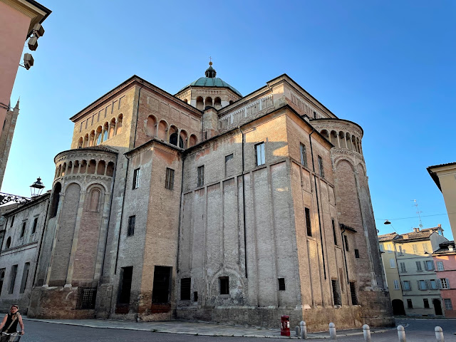
Zwiedzanie
LAVAGNA I GENUA
W drodze do Genui planowaliśmy początkowo zobaczyć Cinque Terre, ale dopiero dzień przed wyjazdem doczytaliśmy, że to grupa dosyć odciętych miasteczek, znajdujących się w parku narodowym. Dodatkowo na blogach ostrzegali przed sporymi tłumami, więc postanowiliśmy złapać trochę słońca na plaży. Zdecydowaliśmy się na miasteczko Lavagna (darmowa plaża i parking) a potem krętymi drogami ruszyliśmy do Genui. Miasto jest unikalne i piękne. Wysokie, usytuowane na wzgórzach kamienice tworzą niezwykły krajobraz a mnogość pałaców i zabytków sprawia, że każda uliczka zaprasza, żeby do niej zajrzeć. Nocowaliśmy w sąsiedztwie Castello Mackenzie. Ciężko byłoby wymienić wszystkie zabytki i miejsca, które udało nam się zobaczyć. Zaczęliśmy od zejścia do parku Villetta Di Negro, w którym znajduje się wodospad, za który można zajrzeć. Następnie z wysoko podniesionymi głowami przeszliśmy Via Garibaldi i dotarliśmy do Palazzo Reale. Kolejnym punktem wycieczki był Marina Porto Antico. Po przejściu portowym wybrzeżem ponownie wróciliśmy w głąb miasta do domu Krzysztofa Kolumba, by finalnie dotrzeć do Piazza De Ferrari. Było już późno, więc mijając kolejne pałace, wróciliśmy do domu.
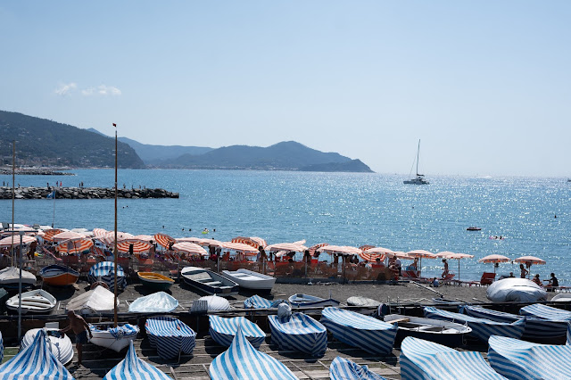
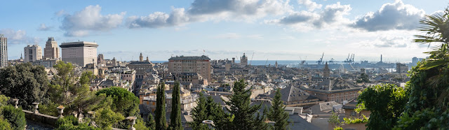
Zwiedzanie
SACRA DI SAN MICHELE I TURYN
Żeby odbić sobie miejsca, które zdecydowaliśmy się ominąć w poprzednich dniach, dodaliśmy do początkowego planu zwiedzanie Sacra di San Michele. Jest to klasztor umiejscowiony na górze, z której rozciąga się piękny widok na okolicę i według niektórych źródeł pierwsze zabudowania pochodzą już z 10 wieku. Ale nie tylko lokalizacja przyciąga wzrok, ale przede wszystkim sam wygląd świątyni. Do kościoła wchodzi się po 180 kamiennych schodach a w samym kościółku słychać ciche chóralne śpiewy, co dodatkowo buduje nastrój tego miejsca. Mogłabym zostać tam dłużej, ale tego dnia czekał na nas jeszcze Turyn, gdzie zobaczyliśmy między innymi: Palazzo Reale di Torino, Piazza Castello i Piazza San Carlo. Po drodze do Chiesa di Santa Maria del Monte dei Cappuccini, skąd rozciąga się piękna panorama miasta, spróbowaliśmy lokalnego specjału: kawowo-czekoladowego Bicerin. Na PiazzaVittorio Veneto spotkaliśmy mężczyznę, który z mostu Vittorio Emanuele I nad rzeką Pad puszczał sporych rozmiarów latawiec. To i późniejsza jazda tramwajem okazało się być najlepszymi atrakcjami dla naszej starszej córki.
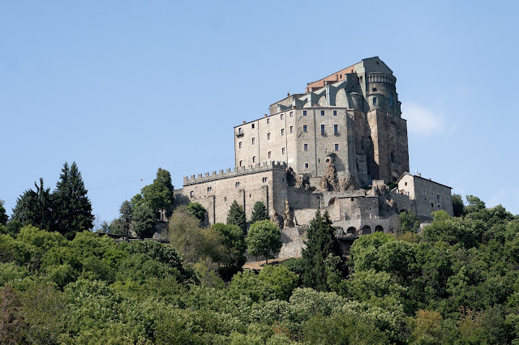
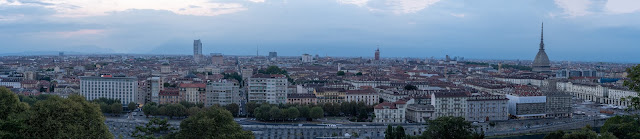
Zwiedzanie
MEDIOLAN
Na deser zostawiliśmy sobie miasto, które od kusiło mnie od bardzo dawna. W Mediolanie zostawiliśmy samochód na darmowym miejscu parkingowym na Via dei Missaglia. Wzdłuż płatnego parkingu można zaparkować bez żadnych opłat. Następnie metrem dojechaliśmy do Castello Sforzesco i tam spędziliśmy dłuższa chwile, spacerując pomiędzy murami zamku i alejkami parku aż dotarliśmy do Arco della Pace. Następnie przez Piazza Mercani i z przerwą na obiad ruszyliśmy do głównego punktu dzisiejszej wycieczki, czyli Duomo di Milano. Po drodze zachwyt starszej córki wzbudził przechodzień, który niósł na ręce dwie papużki. Kiedy zobaczył, z jakim zachwytem Asia się w niego wpatruje, położył jej jedną papugę na głowie a drugą dał jej do rękę. W tym momencie zmęczenie intensywnym zwiedzaniem i wysoką temperaturą zniknęło 😁Jedna z największych katedr na świecie, której ukończenie trwało 600 lat robi niesamowite wrażenie. Zdecydowaliśmy się na zwiedzanie wnętrza oraz dachu. Dodatkowo bilet, który można kupić online i uniknąć kolejek, obejmował wejście do muzeum katedry. Następnie przeszliśmy Galleria Vittorio Emmanuele II - to jedno z tych miejsc, gdzie nie da się opuścić głowy. Po wyjściu z pasażów trafiliśmy na Piazza della Scala, placu otoczonego z unikalnymi zabytkami takimi jak słynna opera La Scala czy Palazzo Marino. Spacerując uliczkami dotarliśmy do Pinacoteca di Brera i to był ostatni punkt naszej wycieczki.
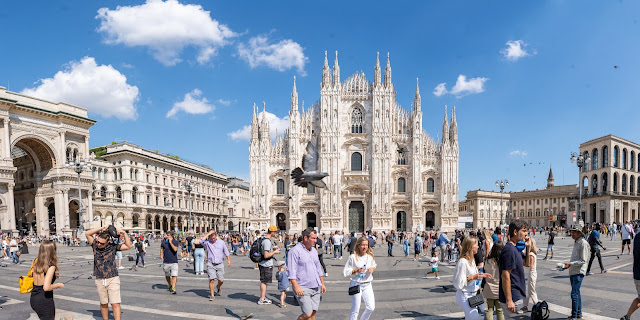
Zdjęcia robił najlepszy fotograf - Marcin Kaciuba.